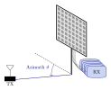
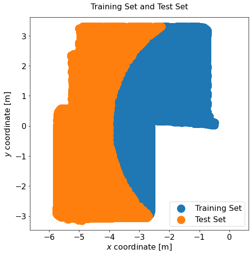
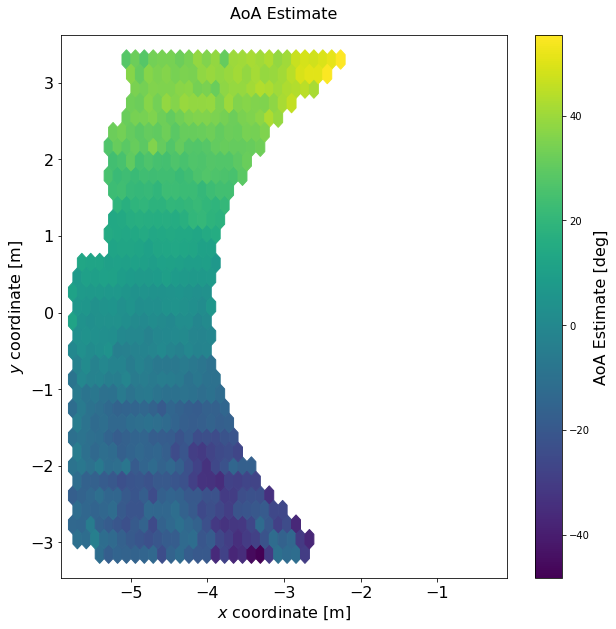
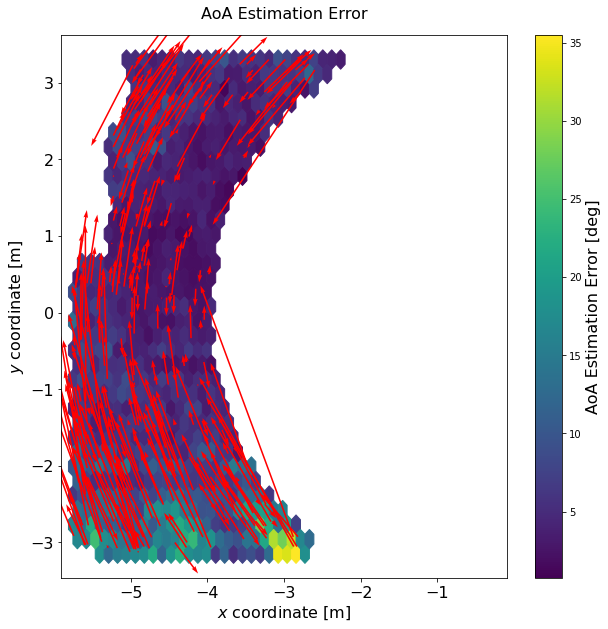
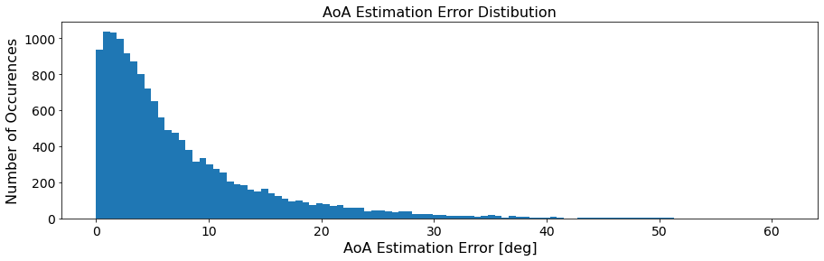

Our reference transmitter calibration tutorial outlines the steps required to perform angle of arrival (AoA) estimation with classical signal processing methods. So, why use neural networks for AoA estimation if good conventional algorithms such as MUSIC exist? Is it just so that we can check a box and claim that we are using "artificial intelligence" or "machine learning"?
No, of course not. There are several advantages (but also some disadvantages) to using a neural-network based approach over model-based AoA estimation. Here is a short comparison:
If there is a sufficient amount of training data, neural-network based AoA estimation usually performs better than classical techniques, as we will show in this tutorial. We will put a special focus on testing the ability of the neural network to generalize AoA estimation to physical regions in space that it has not seen during training.
In case you are unfamiliar with DICHASUS datasets, it might be a good idea to have a look at our position estimation tutorial first. It uses a very similar feature extraction and neural network training and explains both in greater detail.
When it comes to angle of arrival estimation, there are two incident angles that one might want to estimate at the antenna array: Elevation and azimuth. Since, at the time of writing, most of our datasets exhibit a much greater variance in azimuth (compared to elevation), we will focus on azimuth angle estimation in this tutorial. Estimating the elevation angle instead is, however, simply a matter of changing which label to train on, no modifications to the neural network are required.

As always, we start by downloading the dataset and importing it with TensorFlow. We use subcarrier averaging as a simple feature engineering technique, just like we did in the indoor positioning tutorial:
!mkdir dichasus
!wget --content-disposition https://darus.uni-stuttgart.de/api/access/datafile/:persistentId?persistentId=doi:10.18419/darus-2202/2 -P dichasus # dichasus-0152
!wget --content-disposition https://darus.uni-stuttgart.de/api/access/datafile/:persistentId?persistentId=doi:10.18419/darus-2202/3 -P dichasus # dichasus-0153import matplotlib.pyplot as plt
import tensorflow as tf
import numpy as np
def record_parse_function(proto):
record = tf.io.parse_single_example(proto, {
"csi": tf.io.FixedLenFeature([], tf.string, default_value = ""),
"pos-tachy": tf.io.FixedLenFeature([], tf.string, default_value = "")
})
csi = tf.ensure_shape(tf.io.parse_tensor(record["csi"], out_type = tf.float32), (32, 1024, 2))
pos_tachy = tf.ensure_shape(tf.io.parse_tensor(record["pos-tachy"], out_type = tf.float64), (3))
dist = tf.sqrt(tf.square(pos_tachy[0]) + tf.square(pos_tachy[1]))
angle = tf.math.atan2(pos_tachy[1], -pos_tachy[0])
return csi, pos_tachy[:2], angle, dist
def get_feature_mapping(chunksize = 32):
def compute_features(csi, pos_tachy, angle, dist):
assert(csi.shape[1] % chunksize == 0)
featurecount = csi.shape[1] // chunksize
csi_averaged = tf.stack([tf.math.reduce_mean(csi[:, (chunksize * s):(chunksize * (s + 1)), :], axis = 1) for s in range(featurecount)], axis = 1)
return csi_averaged, pos_tachy, angle, dist
return compute_features
datafiles = ["dichasus/dichasus-0152.tfrecords", "dichasus/dichasus-0153.tfrecords"]
dataset = tf.data.TFRecordDataset(datafiles).map(record_parse_function)
training_set = dataset.filter(lambda csi, pos, angle, dist: dist <= 4 and dist > 0.5)
test_set = dataset.filter(lambda csi, pos, angle, dist: dist > 4)
training_set_features = training_set.map(get_feature_mapping(32))
test_set_features = test_set.map(get_feature_mapping(32))
training_set_features = training_set_features.shuffle(buffer_size = 100000).cache()
test_set_features = test_set_features.shuffle(buffer_size = 100000).cache()positions_train = np.vstack([pos for csi, pos, angle, dist in training_set_features])
positions_test = np.vstack([pos for csi, pos, angle, dist in test_set_features])
plt.figure(figsize = (8, 8))
plt.title("Training Set and Test Set", fontsize = 16, pad = 16)
plt.axis("equal")
plt.xlim(-6, 0)
plt.scatter(x = positions_train[:,0], y = positions_train[:,1], marker = ".", s = 1000, label = "Training Set")
plt.scatter(x = positions_test[:,0], y = positions_test[:,1], marker = ".", s = 1000, label = "Test Set")
plt.legend(fontsize = 16)
plt.xlabel("$x$ coordinate [m]", fontsize = 16)
plt.ylabel("$y$ coordinate [m]", fontsize = 16)
plt.tick_params(axis = "both", labelsize = 16)
plt.show()
only_input_output which removes all irrelevant information from the dataset.
Second, and perhaps less obvious, we need to make sure that there is no discontinuity in the desired AoA values in the dataset.
This could occur if there are both angles close to \( 0^\circ \) and close to \( 360^\circ \) - MSE loss would not be suitable for these circumstances.
However, thanks to the way the desired (ground truth) azimuth angle was computed earlier, we have already avoided this issue, all angles are in the continuous range \( (-90^\circ, 90^\circ) \).
nn_input = tf.keras.Input(shape=(32, 32, 2), name = "input")
nn_output = tf.keras.layers.Flatten()(nn_input)
nn_output = tf.keras.layers.Dense(units = 64, activation = "relu")(nn_output)
nn_output = tf.keras.layers.Dense(units = 64, activation = "relu")(nn_output)
nn_output = tf.keras.layers.Dense(units = 64, activation = "relu")(nn_output)
nn_output = tf.keras.layers.Dense(units = 1, activation = "linear", name = "output")(nn_output)
model = tf.keras.Model(inputs = nn_input, outputs = nn_output, name = "AoA_NN")
model.compile(optimizer = tf.keras.optimizers.Adam(), loss = "mse")
def only_input_output(csi, pos, angle, dist):
return csi, angle
batch_sizes = [32, 64, 256, 1024, 4096]
for b in batch_sizes:
dataset_batched = training_set_features.batch(b)
test_set_batched = test_set_features.batch(b)
print("\nBatch Size:", b)
model.fit(dataset_batched.map(only_input_output), epochs = 10, validation_data = test_set_batched.map(only_input_output))positions = []
predicted_angles = []
true_angles = []
distances = []
for csi, pos, angle, dist in test_set_features.batch(100):
positions.append(pos.numpy())
predicted_angles.append(np.transpose(model.predict(csi))[0])
true_angles.append(angle.numpy())
distances.append(dist.numpy())
positions = np.vstack(positions)
predicted_angles = np.hstack(predicted_angles)
true_angles = np.hstack(true_angles)
distances = np.hstack(distances)
errorvectors = np.transpose(distances * np.vstack([-np.cos(predicted_angles), np.sin(predicted_angles)])) - positions
errors_abs_deg = np.rad2deg(np.abs(true_angles - predicted_angles))We feed the complete test set into the neural network (in batches) and let it predict an azimuth angle estimate. In addition, we store the ground truth positions as well as the true angles and true distances to the antenna array in additional NumPy arrays.
Based on this information, we can compute error vectors, that is, vectors that point from the ground truth position, as provided in the dataset, to the estimated position. We only estimate an angle here, so, to obtain a complete position estimate, we will just use the true (ground truth) distance value to compute the coordinates of the location that the error vector points at.
plt.figure(figsize=(10, 10))
plt.title("AoA Estimate", fontsize = 16, pad = 16)
plt.axis("equal")
plt.xlim(-6, 0)
plt.hexbin(x = positions[:, 0], y = positions[:, 1], C = np.rad2deg(predicted_angles), gridsize = 30)
cb = plt.colorbar()
cb.set_label("AoA Estimate [deg]", fontsize = 16)
plt.xlabel("$x$ coordinate [m]", fontsize = 16)
plt.ylabel("$y$ coordinate [m]", fontsize = 16)
plt.tick_params(axis = "both", labelsize = 16)
plt.show()
Next, we visualize the estimation errors. We could try to plot all the error vectors, but that's simply too many lines. So, instead, we only plot a few vectors (the first 300 entries from the test set, which was randomly shuffled) and display estimation errors as a heatmap again.
plt.figure(figsize=(10, 10))
plt.title("AoA Estimation Error", fontsize = 16, pad = 16)
plt.axis("equal")
plt.xlim(-6, 0)
plt.hexbin(x = positions[:, 0], y = positions[:, 1], C = errors_abs_deg, gridsize = 30)
plt.quiver(positions[:300, 0], positions[:300, 1], errorvectors[:300, 0], errorvectors[:300, 1], color = "red", angles = "xy", scale_units = "xy", scale = 1)
cb = plt.colorbar()
cb.set_label("AoA Estimation Error [deg]", fontsize = 16)
plt.xlabel("$x$ coordinate [m]", fontsize = 16)
plt.ylabel("$y$ coordinate [m]", fontsize = 16)
plt.tick_params(axis = "both", labelsize = 16)
plt.show()
plt.figure(figsize=(15, 4))
plt.title("AoA Estimation Error Distibution", fontsize = 16)
plt.xlabel("AoA Estimation Error [deg]", fontsize = 16)
plt.ylabel("Number of Occurences", fontsize = 16)
plt.tick_params(axis = "both", labelsize = 14)
plt.hist(errors_abs_deg, bins = 100)
plt.show()
All our datasets are licensed under the CC-BY license, i.e., you are free to use them for whatever you like as long as you reference us in your publications. All code in this tutorial is CC0-licensed. This tutorial was written jointly by Robin Sauerzapf and Florian Euchner.